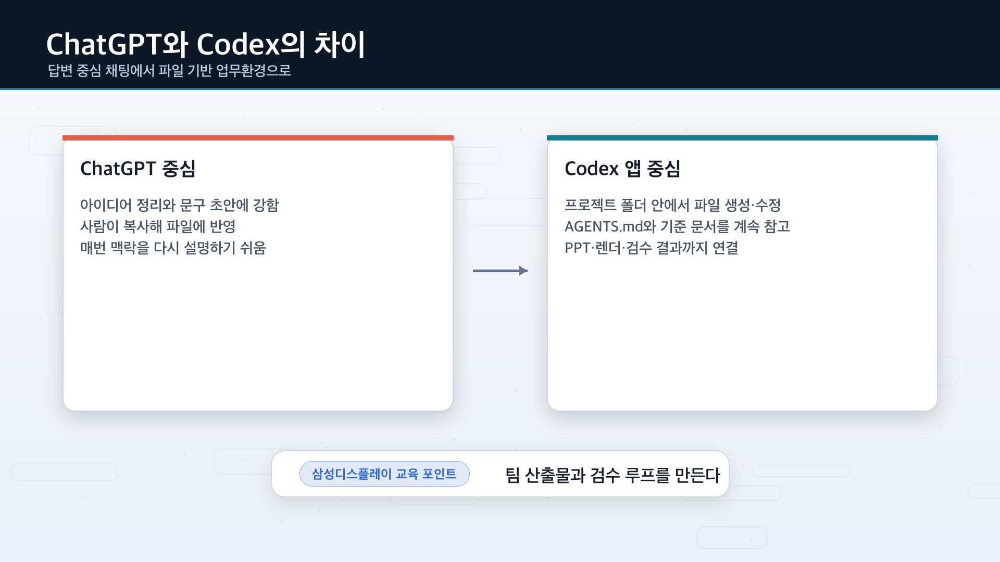
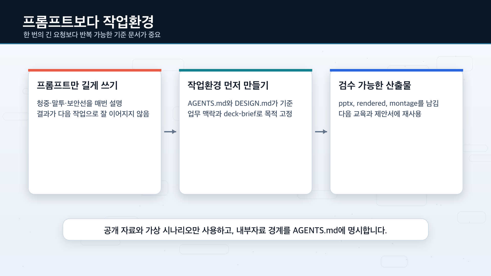
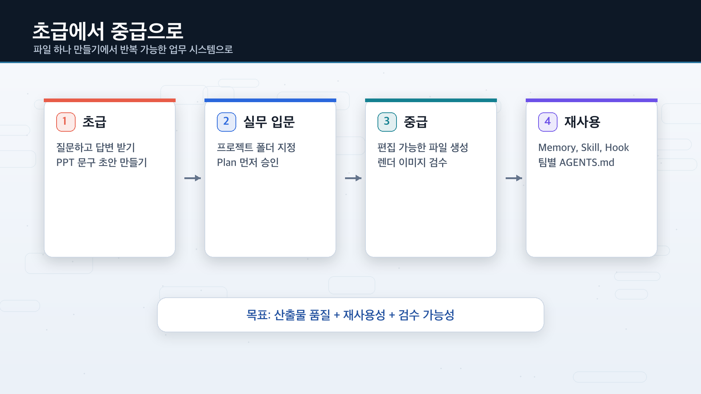
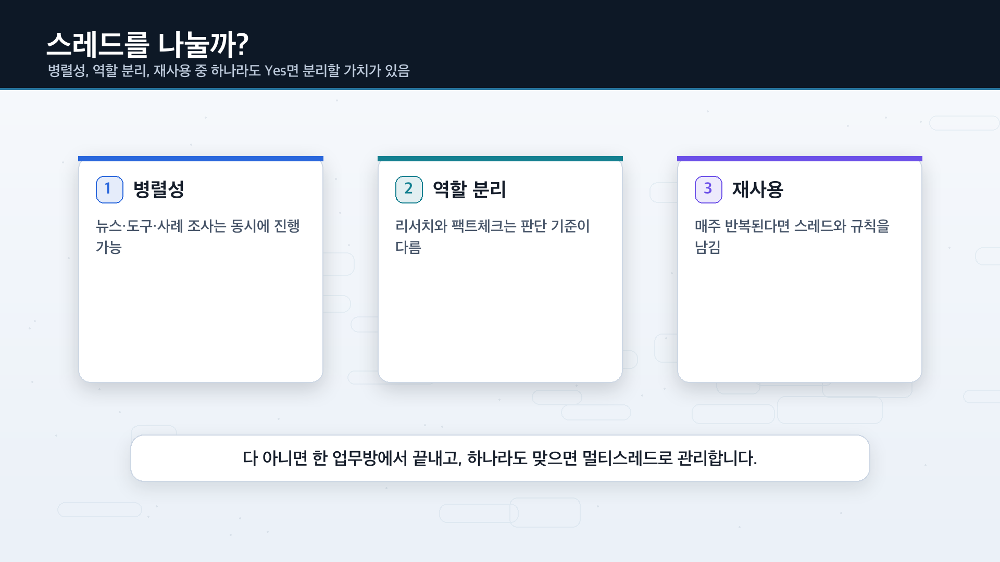
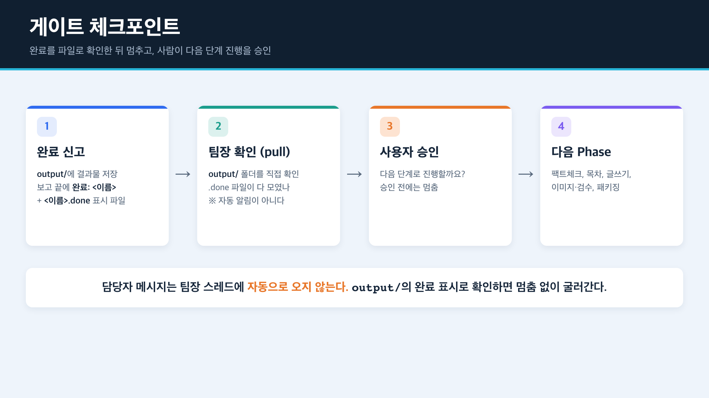

Codex를 제대로 활용하기
강의 슬라이드 「Codex 제대로 활용하기」를 실제로 따라 해 보는 교육용 웹페이지입니다. 개념을 짧게 짚은 뒤, 두 개의 실습(제안서 PPT, 멀티스레드 뉴스레터)을 복사·붙여넣기 프롬프트로 직접 해 보고, 마지막에는 이 모든 흐름을 자동으로 구성해 주는 하네스(harness)로 마무리합니다.
전체 목차
왜 Codex인가
답변형 도구보다 작업 흐름을 만들기 좋은 환경이라는 관점에서 보면 강점이 선명해집니다.
📁파일·저장소 단위 작업
- 코드와 문서를 함께 다룬다
- 산출물을 파일 형태로 남기기 좋다
🔧도구 호출 중심 실행
- 검색·셸·패치·파일 입력을 연결한다
- 답변보다 실행 결과가 중요하다
🔁작업 루프에 적합
- Plan → Build → Verify 흐름이 자연스럽다
- 수정 라운드를 반복하기 쉽다
♻️재사용 가능한 운영
- 반복 업무를 Skill·템플릿으로 축적
- 실습·자동화로 확장하기 좋다
ChatGPT vs Codex — 무엇이 다른가
ChatGPT가 옆에서 답을 말해 주는 상담사라면, Codex 앱은 폴더를 열고 파일을 만드는 실무 담당자에 가깝습니다.
| 구분 | ChatGPT 중심 방식 | Codex 앱 중심 방식 |
|---|---|---|
| 기본 단위 | 채팅방 | 프로젝트 폴더 |
| 결과 형태 | 답변·초안·정리문 | 파일·폴더·검수 결과 |
| 작업 방식 | 답을 받아 사람이 복사/붙여넣기 | Codex가 폴더 안에서 직접 생성·수정 |
| 반복 작업 | 매번 다시 설명 필요 | AGENTS.md·메모리·Skill로 재사용 |
| PPT 작업 | 슬라이드 문구 초안에 강함 | .pptx·렌더 이미지·검수 루프까지 연결 |
| 업무 적용 | 개인 생산성 중심 | 팀 단위 산출물·이력 관리·보안 규칙 반영 |

도구 비교와 Codex 기능 지도
"누가 더 똑똑한가"보다 "어떤 작업 단위·작업 흐름에 맞는가"를 구분해 보는 것이 중요합니다.
경쟁 서비스와 비교할 때 보는 기준
채팅형
- 빠른 질문·답변
- 아이디어 발산·초안
- 프로젝트 맥락은 상대적으로 약함
IDE 보조형
- 코드 편집 중 즉시 제안
- 부분 수정·리팩터링 보조
- IDE 안 생산성이 강점
CLI · 에이전트형
- 저장소 단위 작업
- 명령 실행·파일 단위 수정
- 계획·구현·검증 루프에 적합
★Codex를 볼 포인트
- Agent·Skill로 반복 작업 구조화
- 도구 호출·산출물 중심 작업
- 실습·자동화로 연결하기 좋음
Codex 기능 지도
Codex는 단일 기능이 아니라 인터페이스 · 도구 · 실행 확장성을 함께 다루는 작업 환경입니다. 발표·실습에서는 모든 기능보다 자주 쓰는 작업 흐름에 집중합니다.
Interfaces
Tools
Run & Scale
어디서 어떻게 쓰나 — 시작점 고르기
CLI로 할 때
- 저장소 전체를 보며 작업
- 파일 생성·수정·명령 실행이 자연스럽다
- 반복·자동화·실습과 연결 좋음
IDE extension으로 할 때
- 코드 편집 중 바로 도움
- 작은 수정·리팩터링에 빠름
- 익숙한 환경 안 생산성 높음
▶처음 배우는 추천 순서
- 1단계 : IDE 또는 짧은 CLI 요청
- 2단계 : 파일 산출물 받기
- 3단계 : Skill·Agent로 확장
Codex 작업의 기본 루프
한 번에 완성하려 하기보다, 작은 사이클을 빠르게 반복하는 편이 결과와 수정 속도에 유리합니다.
문제 정의
무엇을 만들지 한 문장으로 정리한다.
계획 수립
입력 자료, 제약 조건, 완료 기준을 정리한다.
구현
생성·수정·도구 실행으로 초안을 만든다.
검수
테스트·체크리스트·품질을 확인한다.
수정 반복
바꿀 점을 구체화해 다음 라운드로 연결한다.
① 첫 결과는 초안으로 본다
② 수정 요청은 번호로 전달한다
③ 좋은 프롬프트는 템플릿으로 남긴다
프롬프트 구조 · 컨텍스트 · 수정 요청
막연한 요청보다 작업 명세를 분리해서 주면 결과와 수정 속도가 좋아집니다. 프롬프트는 길이보다 구조가 중요합니다.
일 잘 맡기는 프롬프트 6요소
| # | 항목 | 설명 |
|---|---|---|
| 01 | 목표 | 무엇을 완성해야 하는가 |
| 02 | 입력 자료 | 참고 파일, 링크, 기존 코드, 디자인 방향 |
| 03 | 제약 조건 | 범위, 형식, 톤, 기술 스택, 제외할 것 |
| 04 | 완료 기준 | Done의 정의와 검증 항목 |
| 05 | 산출물 | 어떤 파일·경로·형태로 남길지 |
| 06 | 수정 기준 | 다음 라운드에서 무엇을 어떻게 바꿀지 |
좋은 첫 요청 템플릿 (복사해서 채워 쓰기)
[목표] 무엇을 완성해야 하는가 (한 문장) [입력] 참고 링크 / 파일 / 기존 코드 / 참고 화면 [제약] 형식, 톤, 기술 스택, 제외할 것 [완료 기준] Done의 정의와 확인 항목 [산출물] 어떤 파일·경로·형태로 남길지 [수정 기준] 첫 결과를 본 뒤 무엇부터 바꿀지 * 첫 결과는 초안으로 본다. "수정 포인트 목록도 함께 제안해줘"를 붙이면 다음 라운드가 쉬워진다.
브랜드 소개용 단일 페이지 초안을 만들어줘. - 목표: 핵심 가치를 빠르게 전달 - 입력: 소개 문구, 로고, 참고 사이트 - 제약: 한글, 3개 섹션, 심플한 톤 - 완료 기준: 헤드라인·핵심 가치·CTA 포함 - 산출물: index.html, style.css, 수정 포인트 목록
컨텍스트를 잘 주면 결과가 좋아진다
주면 좋은 정보
- 목표 — 무엇을 완성해야 하는가
- 참고 자료 — 링크·파일·예시 화면
- 제약 조건 — 형식·톤·기술 스택·제외할 것
- 완료 기준 — Done의 정의
- 산출물 — 파일·형태
빠뜨리기 쉬운 정보
- 우선순위 — 무엇이 가장 중요한가
- 수정 기준 — 다음 라운드에서 무엇을 바꿀지
- 대상 독자 — 누구를 위한 결과물인가
- 톤 앤 매너 — 전문적 / 캐주얼 / 설득형
- 검수 방법 — 누가 어떤 기준으로 볼 것인가
수정 요청은 이렇게 한다
결과가 기대와 다를 때는 추상적으로 말하지 말고, 위치 · 우선순위 · 이유를 함께 줍니다.
우선순위
무엇이 1순위인지 먼저 말한다
바꿀 위치
섹션·파일·문장처럼 위치를 지정한다
바꾸는 이유
왜 바꾸는지 목적을 함께 적는다
다음 산출물
수정 후 무엇을 다시 받을지 정한다
1) 첫 섹션 제목을 더 짧게 줄여줘. 2) CTA 버튼은 더 눈에 띄게 바꿔줘. 3) 설명 문구는 20% 정도 압축해줘. 4) 수정 후 바뀐 점을 3줄로 요약해줘.
잘 맞는 일과 구조화가 필요한 일
도구의 차이보다, 어떤 종류의 일을 맡기느냐가 결과 품질을 크게 좌우합니다.
✓ Codex에 잘 맞는 업무
- 반복 수정과 리팩터링
- 파일·폴더 단위 작업
- 초안 생성 후 반복 개선
- 체크리스트 기반 검수
- 실습·자동화로 이어질 작업
⚠ 구조화가 더 필요한 업무
- 목표가 모호한 요청
- 참고 자료가 없는 디자인 요청
- 우선순위가 섞인 큰 요구사항
- 완료 기준이 없는 검수
- 한 번에 모든 걸 끝내려는 요청
실습 전 추천 운영법 6가지
작게 시작하기
완성본보다 작은 초안부터 만든다
파일로 남기기
화면이 아니라 파일 단위로 받는다
수정은 번호로
바꿀 점을 목록으로 전달한다
검수 역할 분리
생성과 검수를 따로 보면 품질↑
잘 된 요청 저장
효과 있던 프롬프트는 템플릿으로
반복 패턴 찾기
같은 설명이 반복되면 Skill 후보
Agent · Skill · Orchestrator · 멀티에이전트
여러 작업을 연결하려면 "누가 무엇을 맡는가"를 먼저 분리하는 편이 좋습니다. (두 실습이 바로 이 구조를 몸으로 익히는 과정입니다.)
AAgent
- 하나의 목표를 맡는 실행 주체
- Skill·도구를 활용해 결과를 만든다
- 예: 기획·구현·검수·요약
SSkill
- 반복 가능한 작업 묶음
- 입력·출력이 비교적 일정하다
- 예: 코드 수정·자료 정리·포맷 변환
OOrchestrator
- 순서·병렬화·결과 병합 담당
- 작업을 쪼개고 다시 합친다
- 전체 흐름·품질을 관리한다
Skill로 만들면 좋은 업무
반복되지만 매번 손으로 설명하던 일을 재사용 단위로 묶으면 생산성이 빠르게 올라갑니다.
반복된다
비슷한 요청이 여러 프로젝트에서 자주 나온다
입출력이 일정
받고 내는 것이 비교적 명확하다
검수 기준이 있다
좋고 나쁨을 판단할 체크리스트가 있다
다른 Agent도 쓴다
여러 역할이 공통으로 호출
다음에도 재사용
운영 방식이 다시 반복될 가능성이 높다
예시 업무
- 요약을 정해진 형식으로 정리
- 리뷰 포인트 추출
- 회의 메모 → 액션 아이템
멀티에이전트는 언제 쓰나
✓ 멀티에이전트가 유리
- 조사·초안·구현·검수를 분리할 수 있다
- 서로 다른 역할을 병렬로 돌릴 수 있다
- 결과를 합칠 규칙이 있다
- 반복되는 큰 작업 흐름이다
○ 싱글 에이전트로 충분
- 목표가 하나로 명확하다
- 산출물이 한 종류다
- 검수 기준이 단순하다
- 작업이 짧고 흐름이 단순하다
제안서 PPT 만들기
Codex 앱에게 작업 폴더를 맡기고 실제 .pptx 파일을 만들게 하는 흐름. "멋진 한 장"이 아니라 기준 문서와 검수 루프를 갖춘 재사용 가능한 PPT 제작 업무환경을 만드는 것이 목표입니다.

STEP 1 · 폴더 구조와 기준 문서를 먼저 만든다
처음부터 PPT를 만들지 않습니다. 먼저 Codex가 계속 참고할 작업 환경(기준 문서)을 만듭니다.
| 파일/폴더 | 역할 |
|---|---|
AGENTS.md | 이 프로젝트에서 Codex가 지켜야 할 작업 규칙·말투·검수·안전 규칙 |
brand/DESIGN.md | 색상·폰트·배경·여백·레이아웃 기준 |
context/business-context.md | 청중·업무 문제·제안 범위·핵심 메시지 |
context/deck-brief.md | 슬라이드 흐름·발표 대상·완료 기준 |
assets/ · output/ | 이미지·참고 자료 / 최종 PPT·렌더 결과 |
## 목표: 이 프로젝트를 삼성디스플레이 임직원 교육용 AI 업무혁신 제안서 PPT 제작 폴더로 준비해줘. ## 성공 기준: - AGENTS.md 생성 - brand/DESIGN.md 생성 - context/business-context.md 생성 - context/deck-brief.md 생성 - assets/와 output/ 폴더 생성 - 각 파일에는 초안 내용이 들어가 있어야 함 ## 제약: - 아직 PPT 파일은 만들지 말 것 - 삼성디스플레이 공식 디자인 시스템이라고 표현하지 말 것 - 회사 내부자료, 미공개 기술, 고객명, 수율, 원가, 로드맵 같은 민감정보는 넣지 말 것 - 공개 자료와 가상의 교육용 업무 시나리오만 사용할 것 - 초보자가 읽어도 이해되는 쉬운 말로 작성할 것 ## 출력: - 만든 파일 목록 - 각 파일 역할 한 줄 설명 - 다음에 내가 확인해야 할 것 ## 멈춤 기준: 파일을 만든 뒤에는 다음 작업으로 넘어가지 말고 내 확인을 기다려줘.

기준 문서 예시 — AGENTS.md
# AGENTS.md ## 목표 이 프로젝트의 목표는 삼성디스플레이 임직원 교육용 AI 업무혁신 제안서 PPT를 만드는 것이다. ## 말투 - 임직원 교육용으로 담백하고 명확하게 설명한다. - 어려운 기술 용어는 첫 등장 때 한 문장으로 풀어 설명한다. - 성과는 과장하지 않고, 업무 흐름 변화와 검수 가능성을 중심으로 표현한다. ## PPT 제작 규칙 - Presentations 플러그인을 우선 활용한다. - 텍스트·차트·기본 도형은 가능하면 PowerPoint에서 편집 가능한 객체로 유지한다. - 중요한 글자는 이미지 안에 넣지 말고 PPT 텍스트로 배치한다. - brand/DESIGN.md의 색상·배경·여백 규칙을 우선 적용한다. - 완료 전 output/review-montage.png와 검수 요약을 만든다. ## 보안 및 자료 규칙 - 회사 내부자료, 고객 정보, 미공개 기술, 수율, 원가, 로드맵은 사용하지 않는다. - 외부 자료는 공개 출처만 사용하고 출처를 남긴다. - 불확실한 수치나 주장은 사실처럼 단정하지 않는다. - 외부 웹 접속이나 데스크톱 앱 조작이 필요하면 먼저 왜 필요한지 설명하고 승인을 요청한다.
STEP 2 · 바로 만들지 말고 Plan부터 받는다
첫 제작 요청에서 "만들어줘"라고 하지 않습니다. 먼저 계획을 받으면 슬라이드 방향·검수 방식·참고 문서 누락을 미리 잡을 수 있습니다.
목표: 삼성디스플레이 임직원 교육용 10장짜리 AI 업무혁신 제안서 PPT를 만들고 싶어. 성공 기준: - 제조·품질·시장조사·보고서 작성 업무의 반복 페인포인트가 드러나야 함 - Codex로 파일 기반 업무환경을 만드는 방법이 구체적으로 보여야 함 - 슬라이드별 역할과 핵심 메시지가 분명해야 함 - 공개 자료를 쓰면 출처가 명확해야 함 - PowerPoint에서 텍스트·기본 도형을 편집할 수 있어야 함 - brand/DESIGN.md의 색상·배경·여백 규칙을 반영해야 함 - 생성 후 렌더 이미지와 review-montage.png로 검수할 수 있어야 함 참고 문서: - AGENTS.md / brand/DESIGN.md / context/business-context.md / context/deck-brief.md 제약: - 아직 pptx 파일은 만들지 말 것 - 중요한 글자를 이미지 안에 넣지 말 것 - 공식 로고나 상표를 임의로 넣지 말 것 - 내부자료·고객명·수율·원가·로드맵은 사용하지 말 것 - 불확실한 기능·파일 경로는 추측하지 말고 확인 질문할 것 출력: - 만들 파일 목록 / 슬라이드별 구성안 / 사용할 도구와 검수 방식 / 내가 승인해야 할 지점 멈춤 기준: 계획을 보여준 뒤에는 제작을 시작하지 말고 내 승인을 기다려줘.
STEP 3 · Presentations 플러그인으로 .pptx 생성
계획을 확인한 뒤에야 실제 파일 생성을 요청합니다.
@Presentations 해당 계획대로 1차 덱을 제작해줘. 성공 기준: - output/sdc-ai-workflow-pilot-proposal.pptx 생성 - 텍스트·기본 도형은 편집 가능한 객체로 유지 - 표지 이미지는 assets/에 별도 파일로 저장 - 생성 후 어떤 파일을 만들었는지 요약 제약: - 핵심 텍스트는 이미지 안에 넣지 말 것 - 공식 로고는 넣지 말 것 / 내부자료·고객명·수율·원가·로드맵 사용 금지 - 렌더 검수는 다음 단계에서 하므로 이번에는 1차 pptx 생성까지만 출력: - 생성 파일 경로 / 슬라이드별 한 줄 요약 / 다음 검수에서 확인할 위험 요소
STEP 4 · 렌더 이미지와 montage로 1차 검수
사람이 열어 보기 전에, Codex에게 렌더 이미지와 montage(전체를 한 장에 모은 이미지)를 만들게 해 글자 잘림·겹침·과장 표현을 먼저 잡습니다.
@Presentations 방금 만든 PPT를 1차 검수해줘. 성공 기준: - output/rendered/에 슬라이드별 PNG 저장 - output/review-montage.png 생성 - 텍스트 잘림·객체 겹침·폰트 대체 가능성 검사 - 내부자료처럼 보이는 문구·출처 누락·과장 표현 검사 - 문제가 있으면 슬라이드 번호와 요소명을 함께 표시 제약: - 렌더에서 확인한 문제와 추측을 구분할 것 - 검사 불가 항목은 "확인 불가"로 표시 - 바로 수정하지 말고 먼저 검수 결과만 보고 출력: - 검수 파일 경로 / 문제 목록 / 우선 수정 1~3개 / 문제 없으면 없다고 보고
수정 요청사항들을 반영해서 ppt 수정본을 제작합니다. 수정본 ppt는 v2로 제작해주고, review-montage-v2도 제작해줘. 수정한 이유와 남은 확인 항목도 함께 정리해줘.
STEP 5 · Computer Use로 PowerPoint 최종 확인
실제 앱에서만 보이는 폰트 대체·슬라이드 쇼 전환·편집 화면 깨짐을 마지막으로 점검합니다.
@Computer PowerPoint에서 생성된 최종 ppt를 열고 최종 확인해줘. 성공 기준: - 모든 슬라이드가 정상적으로 열리는지 - 제목·본문 글자가 잘리지 않는지 - 이미지 crop이 어색하지 않은지 - 발표 모드에서 10장 전체가 정상 전환되는지 - 민감정보처럼 보이는 문구가 없는지 - 문제가 있으면 슬라이드 번호와 수정 제안 요약 제약: - PowerPoint에서 이 파일만 열 것 - 계정·결제·보안 설정 화면은 건드리지 말 것 - 다른 앱·개인 파일을 열지 말 것 - 확인 못 한 항목은 "확인 불가"로 표시
중급자 세팅 — 메모리 · Skill · 훅으로 재사용

| 기능 | 언제 쓰면 좋은가 | 주의할 점 |
|---|---|---|
| Memory | 개인 선호·반복 작업 방식 기억 | 필수 팀 규칙은 메모리만 믿지 말고 AGENTS.md에 |
| Skill | 반복되는 제안서·보고서 제작 흐름 재사용 | 입력·출력·검수 기준을 명확히 적어야 함 |
| Hook | 자동 체크·비밀키 차단·완료 전 검수 강제 | 처음부터보다 반복 패턴이 보일 때 추가 |
AGENTS.md | 프로젝트의 고정 규칙 | 저장소에 남아 다음 작업에도 이어짐 |
실습 1 완료 체크리스트
- ✓기준 문서 4개(
AGENTS.md·DESIGN.md·business-context.md·deck-brief.md)가 있다 - ✓
output/*.pptx파일이 생성됐다 - ✓
output/rendered/와output/review-montage.png로 검수했다 - ✓내부자료·고객명·수율·원가·로드맵이 없다 (보안선 확인)
- ✓PowerPoint 또는 Keynote에서 실제로 열어 확인했다
- ✓다음 제안서에 쓸 템플릿 요소를 정리했다
멀티스레드 뉴스레터 만들기
한 채팅에 다 몰아넣어 느려지고 맥락이 섞이는 문제를, 업무를 담당자 스레드로 나누고 팀장 스레드가 총괄하는 구조로 풉니다. 산출물은 공개 자료 기반 AI 트렌드 뉴스레터 1회분입니다.
개념 — Codex를 멀티스레드 업무 허브로 보기
맨 위에 팀장 스레드(총괄 데스크)가 있고, 그 아래 실제로 일하는 담당자 스레드들이 있습니다. 팀장은 직접 리서치·작성을 하지 않고 지시 · 보고 취합 · 진행 결정만 합니다.

| Codex 용어 | 업무 비유 | 한 줄 설명 |
|---|---|---|
| thread(스레드) | 팀장/담당자 스레드 | 각 방은 자기 맥락을 따로 유지하며 맡은 일을 처리 |
| 병렬 작업 | 담당자 여러 명 동시 근무 | 서로 안 기다려도 되는 일은 같이 시작 |
| 서브에이전트 | 스레드 안의 보조 작업자 | 한 스레드 일이 무거우면 더 작게 쪼개 처리 |
| 완료 보고 취합 | 보고 모으기 | 끝난 내용을 모아 다음 결정을 함 |
output/에 저장하고, 보고 끝에 완료: <스레드이름> 한 줄과 빈 표시 파일 output/<스레드이름>.done을 남깁니다. 그리고 운영자(여러분)가 완료를 전하거나, 팀장 스레드가 게이트에서 output/를 직접 확인해야 다음 단계로 넘어갑니다.스레드를 나눌까? 판단 기준 3가지
무조건 여러 개 켜는 게 잘하는 게 아닙니다. 짧고 단순한 일은 한 업무방이 제일 빠릅니다. 셋 중 하나라도 Yes면 나눌 가치가 있습니다.

1병렬성
동시에 돌릴 수 있나? — 뉴스·도구·사례 조사는 서로 기다릴 필요가 없음
2역할 분리
역할·판단 기준이 다른가? — 초안 작성과 팩트체크는 기준이 다름
3재사용
나중에 다시 이어갈 일인가? — 매주 뉴스레터라면 스레드·규칙을 남김
실습 — 팀장 스레드에 메인 지시문 한 번에 넣기
새 업무방을 열어 팀장 스레드로 정하고, 프로젝트 전체를 어떻게 굴릴지 적은 메인 지시문을 한 번에 넣습니다. 이 한 덩어리에 스레드 구성·병렬/대기·보고 시점·멈춤 규칙이 다 들어 있습니다.
너는 이 프로젝트의 '팀장 스레드'(총괄 데스크)야. 직접 리서치하거나 글을 쓰지 마. 일은 담당자 스레드에 나눠 맡기고, 너는 지시·보고 취합·다음 단계 진행 결정만 한다. [프로젝트] - 폴더: sdc-ai-trend-newsletter - 결과물: "삼성디스플레이 임직원용 AI 트렌드 뉴스레터" 1회분 (HTML, 가능하면 PDF도) - 독자: 제조기술·품질·기획·구매·마케팅·경영지원 등 임직원 - 언어: 전부 한국어 - 자료 범위: 공개 자료만. 내부자료·고객 정보·미공개 기술·수율·원가·로드맵 사용 금지 [담당자 스레드 구성 — 가능하면 네가 방을 만들고 아래 이름을 붙여줘] 1) research-ai-news : 이번 주 AI 산업·정책·모델 업데이트 2) research-display-impact : 디스플레이 제조/품질/공급망/시장조사에 영향을 줄 AI 사례 3) research-tools : 임직원이 업무 보조로 검토할 만한 AI 도구·기능 업데이트 4) factcheck : 위 리서치 주장들의 사실 검증 (의심하는 검수자) 5) outline : 뉴스레터 목차·섹션 구조 6) writing : 확정된 목차로 본문 작성 7) image : 확정 본문에 근거한 섹션별·헤더 이미지 생성 8) image-review : 이미지가 본문·메시지에 맞는지 판정하는 독립 검수자 9) packaging : 최종 HTML 생성 (DESIGN.md 반영) [진행 순서와 게이트 — 이게 제일 중요해] - Phase 1 (병렬): research 3종을 동시에 시작. 서로 기다리지 마. - Phase 2 (게이트): Phase 1 세 스레드의 완료 표시(output/<이름>.done)가 다 생긴 뒤에만 factcheck. - Phase 3 (게이트): factcheck 통과 자료로만 outline. - Phase 4 (게이트): outline 확정 후 writing. - Phase 5 (게이트): writing 본문 확정 후 image. 본문 없이 이미지 먼저 만들지 마. image가 나오면 image-review가 본문과 대조해 적합성을 판정, 부적합하면 재생성 또는 "이미지 없음". - Phase 6 (게이트): 본문과 검수 통과 image가 둘 다 나온 뒤에만 packaging. [완료 신고 규칙 — 핵심] - 각 스레드는 '결론 먼저' 순서로, 핵심 3줄 + 다음 단계 1줄로 보고. - 작업물은 output/에 저장. 끝나면 ① output/에 저장 ② 보고 끝줄에 `완료: <스레드이름>` ③ 빈 표시 파일 output/<스레드이름>.done 생성. - 진행 중간 상태는 보고하지 마. 단, 막힘·사실 판단·사용자 확인 필요 시만 예외. [팀장 스레드의 완료 확인] - 담당자 메시지는 너에게 자동 전달되지 않는다. "알아서 올라오겠지" 하고 기다리지 마. - Phase를 넘기기 전에 output/ 폴더를 직접 확인해 .done 파일이 다 생겼는지 본다. 운영자가 "○○ 완료"라고 전해 주면 그것도 완료 신호. [멈춤과 확인] - 한 Phase가 끝나면 절대 바로 다음 Phase로 넘어가지 마. - 매 Phase 종료 시: (1) 결과 요약 보고 (2) "다음 단계로 진행할까요?" 질문 (3) 내가 "진행"이라고 답하기 전엔 멈춰 있어. - 사실이 불확실하면 지어내지 말고 '확인 필요'로 표시. 준비됐으면 작업을 바로 시작하지 말고, 먼저 Phase 1 계획만 보여준 뒤 내 "진행" 신호를 기다려.
Phase 1 — 리서치 스레드 3개를 동시에
자료 조사 세 갈래는 서로 안 기다려도 되니 동시에 돌립니다. 각 리서치 스레드에 아래 지시문을 붙여넣습니다.
너는 삼성디스플레이 임직원용 AI 트렌드 뉴스레터의 리서치 담당자야. 공개 자료만 사용해서 이번 주 중요한 항목 5개를 찾아줘. 성공 기준: - 각 항목은 제목, 한 줄 요약, 임직원 업무 영향, 출처 링크를 포함 - 내부자료·고객 정보·미공개 기술·수율·원가·로드맵은 사용하지 않음 - 확인이 약한 내용은 '확인 필요'로 표시 출력: - 핵심 3줄 요약 - 후보 항목 표 - factcheck 스레드가 확인해야 할 쟁점
게이트 — 완료를 확인한 뒤에만 다음으로

| Phase | 단계 | 시작 조건(게이트) | 병렬? |
|---|---|---|---|
| 1 | 리서치 (AI뉴스·디스플레이 영향·도구) | 바로 시작 | 병렬 |
| 2 | 팩트체크 | Phase 1 세 스레드 .done 후 | - |
| 3 | 구성(목차) | 팩트체크 통과 자료로만 | - |
| 4 | 글쓰기 | 목차 확정 후 | - |
| 5 | 이미지 + 적합성 검수 | 글쓰기 본문 확정 후 | - |
| 6 | 패키징(HTML·PDF) | 글·(검수 통과)이미지 둘 다 나온 뒤 | - |

초안 보니까 디스플레이 제조 현장과 연결되는 부분이 약해. research-display-impact 스레드에서 공개 사례 기반으로 제조/품질/설비보전 관점의 적용 아이디어 3개를 더 보강해줘. 보강되면 factcheck 스레드가 출처와 표현 수위를 확인하고, writing 스레드 본문 2번 섹션에도 반영해줘. 팀장 스레드는 완료 보고를 취합해서 다음 단계 진행 여부를 물어봐줘.
AGENTS.md로 저장해 두면, 폴더에서 작업을 시작할 때 같은 규칙(역할 구조·페이즈 게이트·멈춤 규칙·보안 규칙)이 자동 적용됩니다.실습 2 완료 체크리스트
- ✓팀장 스레드와 담당자 스레드의 역할이 분리됐다
- ✓Phase 1 리서치 3종을 병렬로 돌렸다
- ✓각 담당자가
output/에 결과물과.done표시를 남겼다 - ✓게이트마다 팀장이 완료를 확인하고 "진행?"을 물었다
- ✓이미지는 본문 확정 후 만들고 독립 스레드가 검수했다
- ✓반복 운영을 위해
AGENTS.md로 규칙을 저장했다
출처 · github.com/namojo/ai-edu · sdc-codex-multithread-newsletter
저장소로 혼자 이어가기 — 자가학습 커리큘럼
앞의 두 실습을 강의에서 함께 해 봤다면, 이제 이 페이지가 배포된 저장소에서 같은 원리를 입문 → 실무 → 확장 순서로 혼자 익힐 수 있습니다. 폴더 하나하나가 독립된 실습이고, 데이터·에이전트 정의·스킬이 함께 들어 있습니다.
먼저 · 설치와 로그인 (최초 1회)
모든 실습은 Codex CLI 하나로 진행합니다. 상세 절차와 OS별 자동 설치 스크립트는 setup/SETUP_ko.md에 있습니다. 요약하면 아래 세 묶음입니다.
npm install -g @openai/codex # 또는 macOS: brew install codex codex login # ChatGPT 계정 인증 (Plus/Pro/Team 플랜 필요) codex login status # 'logged in'이면 준비 완료 git clone https://github.com/namojo/codex-edu.git cd codex-edu
| 확인 항목 | 명령 |
|---|---|
| Codex CLI 설치 | codex --version |
| Codex 로그인 | codex login status |
| Git · Python (클론·확장 실습) | git --version · python3 --version |
codex 또는 Codex 앱)에서는 Codex가 파일 수정·명령 실행 전에 승인을 묻습니다 — 내용을 확인하고 허용하세요.
자동화(codex exec)에서는 사람이 없으므로 승인 대신 샌드박스(--sandbox read-only / workspace-write)로 통제합니다.1 · 입문 — 하네스가 무엇을 바꾸는가
지식을 파일로 빼내고(Agent·Skill), 일을 나누고 다시 합치는 감각을 익히는 단계입니다. 앞의 두 실습과 같은 원리를 다른 도메인에서 반복합니다. 폴더 이름은 저장소로, "→ 실습N" 링크는 이 페이지 아래의 따라하기 실습(복사·붙여넣기 프롬프트 포함)으로 이동합니다.
| 모듈 | 한 줄 목표 | 따라하기 · 실행 방식 |
|---|---|---|
| xlsx/ | 표준용어집을 파일로 외부화해 제각각인 6개 분임조 보고서를 하나로 정규화 | → 실습3 · 대화형 (+codex exec 선택) |
| trend-report/ | 같은 보고서를 단일 → 멀티 → 하네스 3단계로 만들며 "이 일은 몇 단계짜리인가"를 익힘 | → 실습4 · codex exec + 대화형 |
| proposal/ | 같은 과업지시서로 단일 프롬프트 vs 전문가 에이전트 팀을 A/B로 비교 | → 실습5 · 대화형 |
| slide/ (선택) | 기준일 셀 하나로 전체가 갱신되는 수집 → 갱신 → 디자인 파이프라인 하네스 | → 실습6 · 대화형 |
| map/ (선택) | 스펙(What)을 쓰고, 그 스펙을 구현할 하네스(Who·How)를 직접 설계 | → 실습7 · 대화형 |
| dashboard/ (선택) | 표준 스키마(계약)를 먼저 확정한 뒤 팬아웃으로 대시보드를 병렬 생성 | → 실습8 · 대화형 |
2 · 실무 — 매일 돌리는 하네스 엔지니어링
입문에서 만든 Agent·Skill을 안전하게 반복시키는 단계입니다. 승인·샌드박스·출력 계약·CI로 "잘 쓰는 것"과 "빠뜨리지 않는 것"을 나눕니다. codex-engineering/에 두 트랙이 있습니다.
| 트랙 | 한 줄 목표 | 대상 · 실행 방식 |
|---|---|---|
| track-a-engineering/ | 코드 진단 → 패치 → 교차 리뷰 → CI 게이트로 "초록불 ≠ 정확"을 체험 | 개발·데이터 담당 · 대화형 → codex exec·CI |
| track-b-ops/ | 코드 없이 반복 업무(규제 모니터링)를 규칙·형식 계약으로 자동화 | 코드 안 짜는 실무자 · 대화형 → codex exec --output-schema |
--sandbox read-only / workspace-write가 안전장치입니다. 매주 같은 구조를 보장하려면 형식을 --output-schema 계약으로 고정하세요.3 · 확장 — 에이전트에 없는 능력을 붙이기
세 번째 축인 Tool을 직접 만드는 단계입니다. 모델이 암산하면 틀리는 계산을 결정론적 코드에 위임합니다.
| 모듈 | 한 줄 목표 | 실행 방식 |
|---|---|---|
| tool/ | 오픈소스 MCP 서버(Python)로 나만의 Tool을 만들어, 대화형·자동화 양쪽에서 같은 서버 사용 | MCP (대화형 + codex exec) |
이 저장소를 관통하는 4가지 원리
모든 모듈은 아래 네 원리의 변주입니다. 실습 중 이 원리들이 어떻게 나타나는지 찾아보세요.
1What·Who·How 분리
무엇을(스펙)·누가(에이전트)·어떻게(스킬)를 한 프롬프트에 뭉치지 않고 파일로 나눈다
2지식의 외부화
매핑 규칙·도메인 지식·표준 양식을 프롬프트가 아니라 파일(용어집·스킬·스키마·AGENTS.md)로 꺼낸다
3계약이 병렬·반복을 만든다
표준 스키마·출력 형식을 먼저 정하면 작업을 병렬로 나누고 매번 같은 형식으로 반복할 수 있다
4검증자는 분리한다
만든 주체가 자기 결과를 최종 승인하지 않는다 — 별도 리뷰어 에이전트·codex review로 교차 검증
혼자 학습을 시작하는 순서
| 문서 | 역할 | 링크 |
|---|---|---|
| 학습 지도 (README) | 커리큘럼 전체 구조와 설치 안내 | github.com/namojo/codex-edu |
| 자가학습 가이드 | 무엇을 어떤 순서로, 무엇을 관찰하며, 어디까지 됐으면 다음으로 넘어갈지 | 자가학습_가이드.md |
| 실습 과제 | 가이드로 익힌 개념을 손으로 풀어 보는 응용 과제 | 실습.txt |
복잡한 프롬프트, 직접 짜지 마세요
아래 실습들에는 에이전트 팀을 굴리는 긴 프롬프트가 나옵니다. 그걸 처음부터 직접 쓸 필요는 없습니다. 세 가지 방법 중 편한 것을 고르세요.
1복붙 프롬프트
이 페이지의 각 실습에 실제 입력할 프롬프트 전문이 복사 버튼과 함께 실려 있습니다. 그대로 붙여넣기만 하면 됩니다.
2동봉된 하네스 자산
trend-report/·proposal/ 폴더에는 AGENTS.md·.codex/agents/ 팀이 이미 들어 있습니다. "이 팀으로 ~를 생산하라" 한 줄이면 됩니다.
3메타 프롬프트
프롬프트를 Codex에게 만들게 시킵니다. 하고 싶은 일만 말하면 규칙·에이전트·실행 프롬프트를 Codex가 파일로 설계해 줍니다.
방법② — 이미 만들어진 팀을 한 줄로 부르기
trend-report/·proposal/에서 codex를 실행하면 폴더의 AGENTS.md와 .codex/agents/ 직무기술서를 Codex가 자동으로 인식합니다. 역할을 다시 설명할 필요 없이 이름만 부르면 됩니다.
trend-report 스킬과 .codex/agents/ 의 전문가 팀으로 이번 달 디스플레이 × AI 트렌드 보고서를 report/2026-07.md 로 생산해줘. 집필은 report-writer, 검증은 fact-checker 에게 맡기고, 검증 실패 항목은 다시 집필자에게 수정시켜줘.
방법③ — 프롬프트를 Codex에게 짜게 하기 (메타 프롬프트)
가장 강력한 방법입니다. 여러분은 무엇을 하고 싶은지만 말하고, 규칙(AGENTS.md)·전문가 정의(.codex/agents/*.toml)·실행 프롬프트는 Codex가 설계하게 합니다. 아래 템플릿의 [하고 싶은 일]만 바꿔 그대로 쓰세요.
나는 [하고 싶은 일]을 하려고 한다. 이 작업을 위한 하네스를 네가 설계해서 파일로 만들어라. 지금은 실제 작업을 하지 말고, 아래 세 가지만 만들어라. ① AGENTS.md — 이 작업의 불변 규칙(품질 기준·보안선·산출물 저장 위치) ② 전문가 에이전트 정의 (.codex/agents/*.toml) — 누가 무엇을 어떤 기준으로 맡는지. 핵심 필드는 name, description, developer_instructions ③ 각 단계에서 내가 입력할 실행 프롬프트 만든 뒤, 내가 순서대로 실행할 명령/프롬프트를 알려달라. 규칙이나 스펙이 애매한 부분은 추측하지 말고 나에게 먼저 물어봐라.
공정 보고서 표준화 (xlsx)
현장 은어로 제각각 쓰인 6개 분임조 생산보고서를, Codex가 표준용어집 기준으로 통역·정규화해 수식이 살아 있는 통합 엑셀 한 부로 재작성합니다. 비정형 현장 문서를 표준 데이터로 바꾸는 감각을 익힙니다. 비유는 여섯 사람의 방언을 표준어로 옮겨 한 장으로 묶는 편집자. 난이도 가장 낮음 · 예상 30분 · 코딩 지식 불필요(엑셀 코드는 Codex가 대신 씁니다).
준비
git clone https://github.com/namojo/codex-edu.git # 이미 받았다면 생략 cd codex-edu/xlsx codex login status # 'logged in' 이면 준비 완료 codex # 대화형 세션 시작
폴더에는 6개 분임조 보고서(생산보고서_*.xlsx)와 지식 베이스 공정_표준용어집.xlsx, 그리고 지시서 prompt.md가 들어 있습니다.
따라하기 — 세션에 이 프롬프트를 붙여넣기
세션이 열리면 아래 지시서(저장소의 prompt.md 전문)를 통째로 복사해 붙여넣으세요. 엑셀은 Codex가 Python(openpyxl)으로 다룹니다 — 설치·실행 전에 승인을 물으면 내용을 확인하고 허용하세요.
당신은 삼성전자 냉장고 제조공장의 공정관리 표준화 담당자입니다.
이 디렉토리에는 6개 분임조의 일일 생산보고서 6개와 「공정_표준용어집.xlsx」가 있습니다.
[역할]
분임조마다 용어, 은어, 문체, 표기 형식이 제각각인 보고서를
표준용어집 기준으로 정규화하고, 하나의 통합 보고서로 재작성하세요.
[도구]
- 엑셀 파일의 읽기·분석·생성·수정은 Python의 openpyxl 라이브러리로 수행하세요.
openpyxl이 설치되어 있지 않으면 pip로 먼저 설치하세요.
- 합계·불량률 셀에는 계산된 값을 하드코딩하지 말고 엑셀 수식
(예: =SUM(C5:C10), =E5/D5)을 기록하여, 파일을 엑셀에서 열었을 때
수식이 살아 있게 하세요.
[작업 절차 — 반드시 순서대로]
1. 용어집 로드: 「공정_표준용어집.xlsx」의 3개 시트(공정용어, 관리항목용어,
표준양식정의)를 먼저 읽고, 치환 규칙과 표준 양식을 파악하세요.
2. 보고서 파싱: 6개 보고서에서 분임조명, 라인, 작성일, 공정별
수량·시간·비고를 추출하세요. 헤더 명칭이 달라도 용어집의 동의어
매핑으로 표준 항목(계획수량, 생산수량, 양품, 불량, 가동시간,
비가동시간)에 대응시키세요.
3. 용어 정규화:
- 공정명은 표준 공정명 + 공정코드(P10~P60)로 통일
- 비고·특이사항의 은어(예: 빵꾸, 데나오시, 콤프, L/S)는 표준용어로 치환
- 치환 시 정보 손실이 우려되면 "(원문: ○○)" 형식으로 병기
- 용어집에 없는 표현은 임의로 해석하지 말고 [미확인 용어] 목록으로
별도 보고
4. 문체 통일: 비고와 특이사항은 개조식 평서체("~함", "~발생")로
재작성하고, 조치가 필요한 항목에는 [조치요청] 태그를 붙이세요.
5. 검증: 각 조의 양품+불량=생산수량, 불량률=불량/생산수량이 성립하는지
확인하고, 불일치 시 원본 값을 유지한 채 [데이터 이상] 플래그를 다세요.
[산출물 — 통합_생산보고서.xlsx, 시트 3개]
① 라인별 표준보고: 6개 라인 × 6개 공정을 표준 양식(표준양식정의 시트의
컬럼 순서)으로 재작성. 합계·불량률은 하드코딩이 아닌 엑셀 수식 사용
② 전사 집계: 공정코드별로 6개 라인을 합산한 크로스탭
(공정 × 라인, 불량률·비가동시간 포함), 불량률 상위 공정 하이라이트
③ 이슈 요약: 전 라인 특이사항을 표준용어로 통합하고
[조치요청/데이터 이상/미확인 용어] 항목을 분류하여 목록화.
반복 발생 이슈(예: 자재 결품)는 발생 라인·횟수를 집계
[주의사항]
- 수치는 절대 변경하지 마세요. 표현만 표준화합니다.
- 어느 조의 어떤 표현을 어떻게 치환했는지 "치환 이력"을
답변에 요약해 주세요(감사 추적 목적).
[미확인 용어]로 멈춰 보고합니다("모르면 멈춰라").여기까지 됐으면 성공
- ✓은어(빵꾸·데나오시 등)가 표준용어로 치환됐다
- ✓수치가 원본과 100% 일치한다 (표현만 바꾸고 숫자는 불변)
- ✓합계·불량률이 하드코딩이 아니라 수식(
=SUM(...))으로 계산됐다
세 가지 일하는 방식 (trend-report)
같은 "디스플레이 × AI 트렌드 분석 보고서"를 세 가지 방식으로 만들며, "이 일은 몇 단계짜리 일인가"를 몸으로 익힙니다. Level 1은 유능한 인턴 한 명, Level 2는 분야별 전문가 팀, Level 3은 매달 돌아가는 보고서 공장입니다. 난이도 입문 · 예상 40분. 폴더에는 L2·L3에서 쓸 에이전트 정의·스킬이 이미 들어 있습니다.
준비
cd codex-edu/trend-report # 저장소를 아직 안 받았으면 먼저 git clone codex login status # 로그인 확인
따라하기 — Level 1 · 인턴 한 명 (한 줄 자동화)
프롬프트 하나로 조사부터 집필까지 한 번에. --search는 실시간 웹 검색입니다. 터미널에 그대로 입력하세요.
codex exec --search "당신은 한국디스플레이 전략마케팅팀의 리서처입니다. '디스플레이 × AI 최신 트렌드 분석' 보고서를 report/trend-brief.md 로 작성하세요. 다뤄야 할 범위: 1) 디스플레이 기술: OLED·마이크로LED·QD, 최근 전시회(CES/SID) 발표 2) AI와의 접점: AI 글래스·XR 기기용 디스플레이, 온디바이스 AI 탑재 기기의 패널 수요, AI 기반 공정·검사 혁신 3) 시장·경쟁: 주요 패널사(삼성D·LGD·BOE·CSOT) 동향과 수급 전망 규칙: 모든 수치·주장에 출처와 날짜를 붙이고, 마지막에 '전략적 시사점' 3가지와 '이번 분기 액션 제안'을 담으세요. 분량 2~3쪽."
따라하기 — Level 2 · 전문가 팀 (대화형 병렬 분업)
대화형 세션(codex)에서 아래를 입력하면 Codex가 서브에이전트 3명을 병렬로 굴리고, 집필자와 검증자를 나눕니다.
디스플레이 × AI 트렌드 분석 보고서를 만들려고 합니다. [1단계] 다음 3개 에이전트를 병렬로 생성해 각자 담당 분야를 조사하고 research/ 폴더에 분야별 조사 노트를 쓰게 하세요. 셋 모두 끝날 때까지 기다리세요. - tech-scout → research/tech.md - ai-analyst → research/ai.md - market-analyst → research/market.md [2단계] report-writer 에이전트를 생성해 research/의 노트 3개를 trend-report 스킬의 표준 템플릿에 맞춰 report/trend-report.md 로 통합 집필하게 하세요. [3단계] fact-checker 에이전트를 생성해 보고서의 모든 수치·출처를 원문과 대조 검증하고, 문제 항목을 [검증실패] 목록으로 보고하게 하세요. 검증 실패 항목은 report-writer 에게 수정시키세요.
따라하기 — Level 3 · 보고서 공장 (자산 기반 한 줄)
폴더의 AGENTS.md·에이전트 정의·스킬을 자산으로 삼아 매달 한 줄로 재생산합니다. Level 1과 명령 길이는 같지만 기대는 자산의 양이 다릅니다.
codex exec --search "trend-report 스킬과 .codex/agents/ 의 전문가 팀으로 2026년 7월호 트렌드 보고서를 report/2026-07.md 로 생산하세요. 지난 호(report/2026-06.md)와 비교해 '전월 대비 변화' 섹션을 포함하세요."
여기까지 됐으면 성공
- ✓L1과 L3의 실행 명령이 둘 다 한 줄이지만, L3이 기대는 자산(파일)의 양이 다름을 이해했다
- ✓집필자(report-writer)와 검증자(fact-checker)가 다른 에이전트임을 관찰했다
- ✓서브에이전트끼리 직접 대화하지 않고 부모가 산출물을 넘긴다는 것을 봤다
제안서 A/B 비교 (proposal)
나라장터 과업지시서 1건을 입력으로, ① 단일 프롬프트와 ② 동봉된 전문가 에이전트 팀(하네스)으로 각각 사업 제안서(docx)를 만들어 나란히 비교합니다. 배경지식이 없는 상태에서 전문가 구조가 무엇을 바꾸는지를 눈으로 확인합니다. 한 줄로 말하면 "A는 요약한 제안서, B는 응답한 제안서". 난이도 입문 · 예상 40분.
준비
cd codex-edu/proposal codex login status
폴더에는 입력 과업지시서_데이터뱅크.hwpx, 두 방식의 예시 산출물, 그리고 하네스 자산(AGENTS.md·.codex/agents/·.agents/skills/)이 들어 있습니다.
따라하기 — 트랙 A · 단일 프롬프트 (깨끗한 기준선)
트랙 A는 하네스 자산이 없는 조건이 기준선입니다. 그래서 과업지시서만 빈 폴더로 복사해 깨끗한 조건을 만든 뒤 codex를 실행합니다.
mkdir -p ../proposal-track-a cp 과업지시서_데이터뱅크.hwpx ../proposal-track-a/ cd ../proposal-track-a codex
과업지시서_데이터뱅크.hwpx 를 읽고, 이를 기반으로 사업 제안서를 제안서A.docx 로 작성해 주세요. docx 생성은 Python(python-docx)으로 하고, 필요한 라이브러리는 pip3로 설치하세요.
따라하기 — 트랙 B · 전문가 팀 파이프라인
proposal/로 돌아와 codex를 실행하면 AGENTS.md가 자동 로드되고, .codex/agents/의 직무기술서를 이름으로 지목할 수 있습니다.
cd ../proposal codex
과업지시서_데이터뱅크.hwpx 를 기반으로 사업 제안서 docx를 작성합니다. .codex/agents/ 의 전문가 팀으로 다음 파이프라인을 실행하세요. [1단계] rfp-analyst 에이전트를 생성해 요구사항 인벤토리 (artifacts/요구사항_인벤토리.md)를 작성하게 하세요. [2단계] domain-expert 에이전트를 생성해 인벤토리에 도메인 지식을 주입하고 artifacts/표준매핑_전략노트.md 를 작성하게 하세요. [3단계] solution-architect 와 pm-expert 에이전트를 병렬로 생성해 각각 기술 제안 장, 사업 관리·유지보수 장 원고를 artifacts/ 에 쓰게 하고, 둘 다 끝날 때까지 기다리세요. [4단계] proposal-writing 스킬의 문서 구조에 맞춰 장별 원고를 하나로 통합하고, Python(python-docx)으로 제안서B.docx 를 생성하세요. 필요한 라이브러리는 pip3로 설치하세요. [5단계] compliance-reviewer 에이전트를 생성해 인벤토리 전건을 원고와 대조 검증하게 하세요. 누락·부실 판정이 나오면 해당 담당 에이전트에게 수정시키고, 전건 통과 판정이 나올 때까지 4~5단계를 반복하세요.
artifacts/요구사항_인벤토리.md 하나에서 파생됩니다(원리 1·2). 5단계에서 compliance-reviewer는 원고를 직접 고치지 않고 담당 에이전트를 지목합니다 — 만든 주체와 승인하는 주체가 분리됩니다(원리 4).여기까지 됐으면 성공
- ✓
제안서A_단일패스.docx와제안서B_하네스.docx를 나란히 열고 4개 비교 지점의 차이를 확인했다 - ✓"A는 요약한 제안서, B는 응답한 제안서"의 의미를 설명할 수 있다
살아있는 슬라이드 (slide)
공개 정책 데이터를 수집·정규화해 엑셀 현황판을 갱신하고, 정부 디자인 표준(KRDS) 테마 보고 슬라이드를 자동 생성합니다. 대화형 세션 하나에서 수집 → 갱신 → 디자인 → 검수 파이프라인을 서브에이전트 분업으로 지휘합니다. 핵심은 기준일 셀 하나로 전체가 재계산되는 "살아있는 문서". 난이도 선택 · 예상 40분.
준비
cd codex-edu/slide codex login status codex # 대화형 세션 시작
경로 A · 완성된 파이프라인 프롬프트 그대로 실행
세션에 아래를 통째로 붙여넣으면 됩니다. Codex가 pip 설치·웹 수집 전에 승인을 물으면 확인하고 허용하세요.
당신은 AI 정책 이행현황 보고 파이프라인의 오케스트레이터입니다. 아래 단계를 순서대로 진행하되, 각 단계는 별도 서브에이전트를 생성해 맡기고 단계 산출물을 확인한 뒤 다음 단계로 넘기세요. Python 라이브러리(openpyxl, python-pptx)가 필요하면 pip로 설치하세요. [입력] - AI행동계획.xlsx (326개 정책권고 + 이행현황 수식) - K-AI2026 대시보드(https://hollobit.github.io/K-AI2026/)의 과제 구조화 데이터 [1단계 — 수집: data-collector 에이전트] 대시보드 페이지에서 과제·권고 구조화 데이터를 수집해 과제 수(99)와 권고 수(326)가 엑셀 ★최종안 시트와 일치하는지 검증하세요. 불일치하면 [데이터 이상]으로 보고하고 파이프라인을 중단하세요. [2단계 — 갱신: xlsx-updater 에이전트] openpyxl로 이행현황요약!B3의 기준일을 오늘 날짜로 변경하세요. D-Day·위험도·집계 수식은 절대 값으로 덮어쓰지 말고 수식 그대로 보존하세요. openpyxl은 수식을 계산하지 않으므로, 집계값은 기한일자 컬럼과 위험도 분류 기준(D<0 기한초과 / ≤34 긴급 / ≤120 주의 / ≤240 관찰 / 그 외 여유 / 기한 없음)으로 Python에서 직접 계산해 collect/summary.md 에 기록하세요. 수식 오류(#REF!, #VALUE! 등)가 있으면 0건이 될 때까지 보고·수정하세요. [3단계 — 집계 확인] 위험도별(기한초과/긴급/주의/관찰/여유/기한없음) 건수와 비중, 정책축별·부처별·분기별 분포를 collect/summary.md 에서 확정하세요. 위험도 건수의 합은 반드시 326이어야 합니다. [4단계 — 슬라이드 생성: slide-designer 에이전트] python-pptx로 KRDS 테마(Primary #246BEB, 남색 #0B2E5C, 다크 표지 → 라이트 본문 → 다크 클로징)의 보고 슬라이드 9장 내외를 AI행동계획_이행현황.pptx 로 생성하세요. 차트는 이미지가 아니라 python-pptx의 네이티브 차트(도넛·막대·누적바)로 만들고, 모든 수치는 collect/summary.md 의 집계값과 일치해야 합니다. [5단계 — 검수: qa-reviewer 에이전트] 슬라이드를 생성한 에이전트가 아닌 별도 에이전트로 검수하세요. python-pptx로 모든 텍스트 프레임의 위치·크기를 읽어 요소 겹침과 오버플로 의심 항목을 찾고, 슬라이드의 모든 수치를 collect/summary.md 와 교차 대조하세요. 결함 목록을 보고받으면 slide-designer 단계로 되돌려 수정한 뒤 1회 재검수하세요. [불변 규칙] - 수치는 엑셀이 유일한 진실 공급원(Single Source of Truth)이다. 슬라이드에 임의 수치를 쓰지 않는다. - '기한초과'는 기한 도래를 의미할 뿐 미이행 확정이 아니므로, 해석 주의 문구를 반드시 포함한다. - UNOFFICIAL 출처와 한계를 클로징 슬라이드에 명시한다.
경로 B · 파이프라인을 Codex에게 설계시키기 (메타 프롬프트)
직접 설계하지 않아도 됩니다. 아래 한 덩어리를 넣으면 Codex가 같은 4역할 파이프라인을 파일(에이전트·스킬·AGENTS.md)로 만들어 줍니다. 그다음 실행은 한 줄이면 됩니다.
AI 정책 이행현황을 대한민국 정부 디자인 표준(KRDS) 테마 슬라이드로 만드는 파이프라인 하네스를 파일로 설계·생성해줘. 지금은 슬라이드를 만들지 마. 만들 것: - .codex/agents/ 에 4개 역할 정의(TOML): data-collector(수집) → xlsx-updater(현황 재계산) → slide-designer(KRDS 슬라이드 생성) → qa-reviewer(수치 교차 검수) - .agents/skills/krds-slide/SKILL.md : KRDS 팔레트·구조·정직성 장치(기준일 푸터, '기한초과 ≠ 미이행' 주의 문구, UNOFFICIAL 출처) 규칙 - AGENTS.md : "슬라이드 수치는 반드시 엑셀에서", "수식은 값으로 덮어쓰지 않는다" 같은 불변 규칙 다 만들면 내가 실행할 한 줄 명령을 알려줘.
여기까지 됐으면 성공
- ✓엑셀 수식이 값으로 덮어써지지 않고, 기준일을 바꾸면 전체가 자동 재계산된다
- ✓슬라이드 수치 = 집계값 (권고 326 · 위험도 합계 326)
- ✓차트가 이미지가 아닌 편집 가능한 네이티브 차트다
스펙 → 하네스 직접 설계 (map)
공공 데이터를 소재로 ① 프로젝트 스펙 문서를 쓰고, ② 그 스펙을 구현할 에이전트 팀(하네스)을 Codex에게 직접 설계·구현시켜 "공무원 검증 맛집 지도" 웹앱을 완성합니다. 앞 실습이 준비된 프롬프트를 따라 했다면, 여기서는 설계도(스펙)와 조직(팀)을 여러분이 직접 만듭니다 — 방법③(메타 프롬프트)의 정식 버전입니다. 난이도 심화 · 예상 60분.
준비
cd codex-edu/map codex login status codex # 전 과정을 대화형 세션 하나에서 진행
1단계 · 스펙 문서 작성 (What)
코드를 시키는 게 아니라 계약서를 쓰게 합니다. 세션에 아래를 그대로 입력하세요.
"시청뽑맛" 웹앱의 프로젝트 스펙 문서를 SEOUL_MATJIP_MAP_SPEC.md 로 작성하세요.
이 단계의 산출물은 스펙 문서 하나뿐입니다 — 아직 코드를 작성하지 마세요.
## 앱 개요
- "시청뽑맛" — map 폴더의 식당리스트_실습용.csv(CP949 인코딩, 탭 구분, CRLF,
15,144건)를 정제·집계하여 맛집 랭킹을 지도로 보여주는 웹앱
- 스택: React + Vite + TypeScript, 지도는 Leaflet, 백엔드 없음
(빌드 타임에 CSV → JSON 전처리)
- 사용자: 시청 인근에서 점심 식당을 고르는 직장인
- 핵심 화면: 지도 뷰(마커 크기 = 방문 횟수), 랭킹 리스트, 식당 상세 패널,
구/월/금액대 필터
## 스펙 작성 규칙 — "구체성이 곧 품질"
- 섹션 구성: overview / core_data_entities / screens / data_processing /
scope_boundaries / success_criteria. 섹션마다 XML 태그로 구획하세요.
- 색상은 이름("파란색")이 아니라 hex 코드로, 크기는 "크게"가 아니라 픽셀값으로.
- core_data_entities 에는 Restaurant 엔티티의 모든 필드(name, address, lat, lng,
visitCount, totalAmount, avgAmount, lastVisit …)를 타입과 함께 정의하세요.
- 데이터 함정 4종 — ① CP949+탭+CRLF 인코딩 ② 집행장소 컬럼의 상호·주소 혼합
③ 법인명-간판명 불일치와 지점 표기 편차 ④ 좌표 부재 — 의 처리 방침을
data_processing 에 CRITICAL: 접두어로 명시하세요.
- scope_boundaries 에 이 프로젝트가 하지 않는 것(리뷰 작성, 실시간 데이터,
로그인)을 명시하세요.
- 빈 상태(검색 결과 0건)와 에러 상태(지오코딩 실패 좌표)의 화면 동작을 정의하세요.
- success_criteria 는 숫자로 검증 가능하게 쓰세요
(예: "2,946개 식당 중 좌표 확보율 95% 이상").
- 먼저 CSV의 첫 20행을 직접 읽어 실제 데이터 형태를 확인한 뒤 작성하세요.
2단계 · 스펙을 구현할 팀 설계 (Who / How)
계약서를 들고 조직을 꾸립니다. 하네스 구성 자체를 Codex에게 설계시키고 여러분이 검수합니다. 같은 세션에 이어서 입력하세요.
SEOUL_MATJIP_MAP_SPEC.md 를 읽고, 이 스펙을 구현할 에이전트 팀(하네스)을
파일로 설계·생성하세요. 이번 지시의 산출물은 앱이 아니라 팀 그 자체입니다 —
아직 앱을 구현하지 마세요.
만들 파일:
1. AGENTS.md — 팀 공통 불변 규칙. 최소한 다음을 포함:
- 정제는 표현을 바꾸지 수치를 바꾸지 않는다 (집행 건수·총액 보존)
- 좌표를 얻지 못한 식당은 임의 좌표를 만들지 말고 [미확인]으로 보고한다
- 스펙(SEOUL_MATJIP_MAP_SPEC.md)이 유일한 요구사항 소스다 —
스펙에 없는 기능은 추가하지 않는다
- 각 단계 산출물의 저장 위치 (data/, src/ 등)
2. .codex/agents/ 에 에이전트 정의 4종 (TOML — 핵심 필드는 name, description,
developer_instructions):
- data-cleaner : CP949/탭 파싱, 혼합 필드 분리, 명칭 정규화,
식당별 집계 JSON 생성
- geocoder : 주소 → 위경도 변환, 실패 주소 목록화
- app-builder : 스펙을 유일한 요구사항 소스로 삼아 React 앱 구현
- qa-validator : 데이터 ↔ 화면 수치 교차 비교, success_criteria 검증.
검증 대상을 직접 수정하지 않는다
3. .agents/skills/ 에 도메인 스킬 최소 2종 (각 폴더에 SKILL.md):
- matjip-data-rules : 정제 규칙과 명칭 통합 기준
- geocoding : 지오코딩 절차, 실패 처리, 캐싱 규칙
설계 규칙:
- 각 에이전트의 developer_instructions 에 입력 파일·산출물 경로·작업 기준을
명시하세요. 에이전트끼리는 직접 대화하지 못하므로 파일이 곧 팀의 공용어입니다.
- 스킬 description 은 "언제 반드시 이 스킬을 쓰는지"가 드러나게 적극적으로 쓰세요.
- SKILL.md 본문은 간결하게 유지하고, 긴 상세 규칙(예: 명칭 통합 사전)은
references/ 하위 파일로 분리한 뒤 본문에는 "언제 읽으라"는 포인터만 남기세요.
- 다 만들면 팀 구조를 표로 요약해 보고하세요.
이제 방금 만든 팀으로 SEOUL_MATJIP_MAP_SPEC.md 를 구현하세요. [1단계] data-cleaner 에이전트를 생성해 matjip-data-rules 스킬에 따라 CSV를 정제·집계하고 data/restaurants.json 을 만들게 하세요. 정제 전후의 집행 건수와 총액이 보존됐는지 근거와 함께 보고받으세요. [2단계] geocoder 에이전트를 생성해 주소를 위경도로 변환하게 하세요. 실패한 주소는 [미확인] 목록으로 보고받으세요. [3단계] app-builder 에이전트를 생성해 스펙대로 React 앱을 구현하게 하세요. [4단계] qa-validator 에이전트를 생성해 데이터와 화면 수치를 교차 비교하고 스펙의 success_criteria 를 검증하게 하세요. 문제 항목은 app-builder 에게 수정시키고, 재검증까지 마치세요. 각 단계가 끝날 때마다 산출물 요약을 보고한 뒤 다음 단계로 넘어가세요.
.codex/agents/*.toml의 qa-validator에 "검증 대상을 직접 수정하지 않는다"가 들어 있는지 확인하세요(원리 4).여기까지 됐으면 성공
- ✓스펙이 색상 hex·픽셀값·필드 타입까지 구체적이다
- ✓
.codex/agents/*.toml이 파일로 생성됐다 (역할을 프롬프트에 직접 넣지 않음) - ✓수치 보존(15,144건 · ≈20.3억)과 좌표
[미확인]보고를 확인했다
설비 모니터링 대시보드 (dashboard)
서로 다른 언어로 말하는 200대 생산설비의 이기종 실시간 텔레메트리를 해석·정규화해 관제 대시보드로 만듭니다. 계약(표준 스키마)을 먼저 확정한 뒤 서브에이전트를 병렬로 가동하는 팬아웃 패턴을 익힙니다. 대시보드가 어려운 이유는 차트가 아니라 이 통역(정규화) 계층입니다. 난이도 심화 · 예상 60분.
준비
cd codex-edu/dashboard codex login status codex # 대화형 세션 시작
폴더에는 교안과 UX 화면분석서만 있습니다. 팀 자산은 여러분이 Codex에게 만들게 합니다 — 하네스를 직접 설계하는 것이 첫 단계입니다.
0단계 · 팀 자산 설계 (하네스를 파일로)
이 폴더에 "실시간 설비 모니터링 대시보드" 하네스의 팀 자산을 생성하세요.
벤더별 원시 페이로드의 실제 모양은 이 폴더 README.md의 1절 표를 근거로 삼으세요.
[1] AGENTS.md — 팀의 불변 규칙:
- 대시보드는 Api 계층의 계약만 바라본다 (시뮬레이터 내부 직접 접근 금지)
- 단위는 표준 스키마에서 통일한다 (초, %, 장) — 변환은 어댑터의 책임
- 매핑 사전에 없는 상태값·필드는 임의 해석하지 말고 [미확인]으로 격리한다
- 정적 배포(GitHub Pages) 가능해야 하므로 빌드 도구 없는 순수 HTML/JS로 만든다
[2] .codex/agents/ — 직무기술서 5종 (각 toml의 핵심 필드는 name·description·developer_instructions):
- schema-architect.toml : SET v1 표준 스키마, SEMI E10 상태 매핑 사전,
REST API 계약을 contracts/ 폴더에 문서로 확정하는 역할
- sim-api-builder.toml : 200대 설비(9개 공정 × 3개 라인) 상태머신과 벤더별
이기종 원시 페이로드를 생성하는 가상 API(api.js) 구현 역할
- normalizer-eng.toml : 4계열 원시 페이로드 → SET v1 어댑터(normalizer.js)
구현 역할. 매핑 규칙은 vendor-payload-dict 스킬의 사전을 따른다
- dashboard-builder.toml : KPI·설비 그리드·알람 피드·설비 상세 UI(index.html,
dashboard.js) 구현 역할. 503 재시도와 로딩·오류 상태 처리 포함
- qa-validator.toml : 원시값=정규화값=화면값 3점 교차 비교와 Playwright
시나리오 테스트 역할. 발견한 문제를 qa-report.md 로 보고
[3] .agents/skills/ — 스킬 4종 (각 폴더에 SKILL.md):
- equipment-telemetry : 9개 공정·벤더 카탈로그, 알람 코드북, 현실적 지표 범위
- vendor-payload-dict : 벤더 4계열 필드 매핑 사전. "Canon Yld는 0~1 비율이므로
×100 → yieldPct" 같은 규칙을 선언적 표로 정리
- frontend-design : 관제실 다크 테마 토큰(색상·상태색·타이포)
- webapp-testing : Playwright 스모크 테스트 절차
1단계 · 계약 확정 (팬아웃 전 최우선)
계약이 없으면 병렬화가 불가능합니다. 이 단계가 끝나기 전에는 구현 에이전트를 하나도 만들지 않습니다.
schema-architect 에이전트를 생성해 contracts/ 폴더에 다음 세 가지 계약을 확정하게 하고, 끝날 때까지 기다리세요. 1) SET v1 표준 스키마 — equipmentId, process, line, vendor, state, produced, tactSec, yieldPct, uph, alarms 등 필드 정의와 단위(초, %, 장) 2) SEMI E10 상태 사전 — RUN/IDLE/DOWN/PM/SETUP 5종의 의미·표시 색상·전이 확률 3) REST API 계약 — /api/v1/equipments, /api/v1/kpi/summary, /api/v1/alarms 의 응답 형식, 쿼리 필터(line·process·state), 오류 응답(503) 규약
2단계 · 병렬 팬아웃 (구현 3방향 동시)
contracts/ 의 계약이 확정되었습니다. 다음 3개 에이전트를 병렬로 생성해 각자 구현하게 하고, 셋 모두 끝날 때까지 기다리세요. 셋 다 contracts/ 의 계약과 AGENTS.md 의 규칙만 근거로 삼아야 하며 서로의 내부 구현을 넘겨보면 안 됩니다. - sim-api-builder → api.js : 설비별 상태머신(RUN/IDLE/DOWN/PM/SETUP 전이 확률), 벤더별 이기종 페이로드(Canon: SECS풍 숫자코드 / Nikon·TEL: snake_case·ms 단위 / 국산: 한글 키 / 레거시: CSV 문자열), 알람 발생, 지연 30~120ms·간헐 503을 실제처럼 모사 - normalizer-eng → normalizer.js : 4계열 → SET v1 어댑터. 매핑 규칙은 vendor-payload-dict 사전을 따르고, 사전에 없는 상태값·필드는 임의 해석하지 말고 [미확인]으로 격리 보고 - dashboard-builder → index.html + dashboard.js : OEE·가동률·합산UPH·누적생산· 알람 KPI, 공정 섹션별 설비 그리드(상태 색상), 실시간 알람 피드, 라인 필터, 설비 상세(원시 vs 표준 페이로드 나란히 표시 — 정규화 가치를 시연하는 핵심 화면)
3단계 · 검증 (만든 사람이 검사하지 않는다)
qa-validator 에이전트를 생성해 다음을 수행하게 하세요. 1) 같은 설비에 대해 원시값 = 정규화값 = 화면 표시값 3점 교차 비교 (예: Canon 설비의 원시 GlassCnt ↔ 정규화 produced ↔ 화면 생산수량) 2) 라인 필터·상태 전이·503 재시도 시나리오를 Playwright로 테스트 문제 항목은 qa-report.md 에 [실패] 목록으로 정리하고, 각 실패는 원인을 만든 담당 에이전트(sim-api-builder / normalizer-eng / dashboard-builder)를 다시 생성해 수정하게 한 뒤 재검증하세요.
schema-architect가 병렬화의 열쇠입니다 — 계약을 먼저 확정했기에 시뮬레이터·정규화·UI를 동시에 만들 수 있습니다(원리 3). QA는 "화면에 숫자가 보인다"가 아니라 원시=정규화=화면 3점을 동시에 읽어 비교합니다(원리 4). 벤더 매핑은 코드가 아니라 vendor-payload-dict 사전으로 외부화합니다(원리 2).여기까지 됐으면 성공
- ✓계약(SET v1 스키마) 확정 전에는 구현 에이전트를 하나도 만들지 않았다
- ✓원시값 = 정규화값 = 화면값 3점 교차 비교로 검증했다
- ✓상세 패널에서 벤더별 원시 형식은 다르고 표준 스키마는 동일하다
자세히 · github.com/namojo/codex-edu · dashboard/README.md · 완성 데모 namojo.github.io/dashboard-display
하네스(harness)로 이 흐름을 자동 구성하기
실습 2에서 손으로 만든 것 — 팀장+담당자 스레드, 페이즈 게이트, AGENTS.md 규칙, output/ 핸드오프 — 을 매번 직접 짜는 대신 자동으로 생성해 주는 도구가 하네스입니다.
지금까지 실습한 패턴을 떠올려 보세요. 역할을 나누고(Agent) · 반복 작업을 묶고(Skill) · 순서와 병합을 관리하는(Orchestrator) 구조를 매번 손으로 설계했습니다.
codex-harness는 "하네스 구성해줘" 한마디로, 도메인 설명을 Orchestrator Thread + 전문 Agent Threads와 그들이 쓸 재사용 스킬로 바꿔 줍니다. Codex 네이티브 표면(AGENTS.md, .agents/, Codex Threads, codex exec, _workspace/)에만 생성합니다.
실습이 곧 하네스 — 손으로 한 것 vs 자동 생성
| 실습 2에서 손으로 한 것 | codex-harness가 자동 생성 |
|---|---|
| 팀장 스레드 메인 지시문 작성 | Orchestrator Thread + 오케스트레이터 스킬 |
| 담당자 스레드 9개 역할 정의 | Agent Thread + 역할 파일(.agents/agents/) + 스킬 |
완료: <이름> · .done 규칙 | Thread brief + handoff report 표준 양식 |
output/로 결과 주고받기 | _workspace/ + thread board (세션 너머로 보존) |
| Phase 게이트를 직접 챙기기 | Orchestrator Thread의 phase gate |
6가지 팀 아키텍처 패턴
| 패턴 | 설명 | 스레드 매핑 |
|---|---|---|
| Pipeline | 순차 의존 작업 | phase별 Thread/스킬을 순서대로 실행 |
| Fan-out/Fan-in | 병렬 독립 작업 | 여러 Agent Thread 병렬 → Orchestrator가 병합 (← 실습 2의 리서치 단계) |
| Expert Pool | 맥락 의존 선택 호출 | 필요할 때만 전문가 Thread 생성 |
| Producer-Reviewer | 생성 후 품질 리뷰 | 작성 Thread와 리뷰 Thread 분리 (← image / image-review) |
| Supervisor | 중앙이 동적 배분 | Orchestrator가 탐색 중 새 brief 생성 |
| Hierarchical | 하향식 재귀 위임 | sub-orchestrator가 하위 팀 관리 |
실행 모드 — 가장 작은 유용한 런타임을 고른다
| 모드 | 언제 쓰나 |
|---|---|
| Single Thread | 작거나 순차적인 작업 — 하나의 스레드 + 스킬 |
| Thread-Orchestrated Team (기본값) | 반복·역할 분리·병렬·긴 맥락 작업 — Orchestrator + Agent Threads |
| Hybrid Thread + codex exec | 반복 CLI 검사나 독립 리뷰 — 조율은 thread, 자동화는 exec |
| Scheduled Harness | 반복되는 무인 read-only 작업 — 외부 스케줄러 + codex exec + _workspace/ |
직접 해 보기 — 설치 후 이 프롬프트를 써 보세요
git clone https://github.com/namojo/codex-harness.git mkdir -p ~/.agents/skills cp -r codex-harness/skills/harness ~/.agents/skills/harness
주간 뉴스레터용 thread-native 하네스를 만들어줘: 리서치, 초안, 편집, 팩트체크 스레드가 _workspace/를 통해 핸드오프하고, Orchestrator Thread가 발행 전 각 phase를 게이트로 통과시키게 해줘.
심층 리서치용 하네스를 만들어줘. 웹 검색, 학술 자료, 커뮤니티 반응을 담당하는 Agent Thread로 fan-out하고, 리뷰 게이트로 교차 검증한 뒤 인용이 달린 보고서를 병합하는 Orchestrator Thread가 필요해.
자주 하는 실수 · 체크리스트 · 참고자료
처음 쓰는 사람들이 자주 하는 실수
1 · 목표 없이 바로 생성
무엇을 만들지 정하지 않고 시작
2 · 입력 자료 부족
링크·파일·예시 없이 막연하게 요청
3 · 완료 기준 없음
어디까지 되면 끝인지 정의 안 함
4 · 수정이 추상적
"좀 더 좋게"처럼 애매하게 전달
5 · 첫 결과에 과한 기대
초안을 완성본처럼 받아들임
6 · 좋은 요청 안 남김
재사용할 템플릿을 저장 안 함
실습 공통 운영 체크리스트
- ✓작업 목표를 한 문장으로 말할 수 있다
- ✓Agent와 Skill의 역할이 분리되어 있다
- ✓검수 기준(완료의 정의)이 명확하다
- ✓결과물을 파일 단위로 받았다
- ✓다음에도 재사용할 수 있게 정리했다
참고 자료
| 자료 | 링크 |
|---|---|
| 실습 1 · 제안서 PPT 가이드 | ai-edu · sdc-codex-ppt-proposal |
| 실습 2 · 멀티스레드 뉴스레터 가이드 | ai-edu · sdc-codex-multithread-newsletter |
| codex-harness (마무리) | github.com/namojo/codex-harness |
| Codex 앱 공식 문서 | developers.openai.com/codex/app |
| AGENTS.md 공식 문서 | developers.openai.com/codex/guides/agents-md |
| Computer Use · Memory · Hooks | developers.openai.com/codex/app/features |